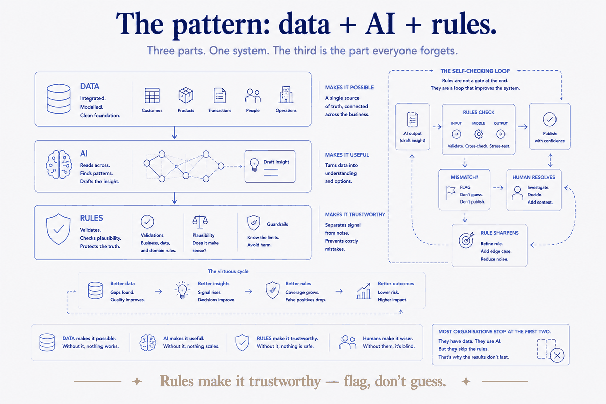
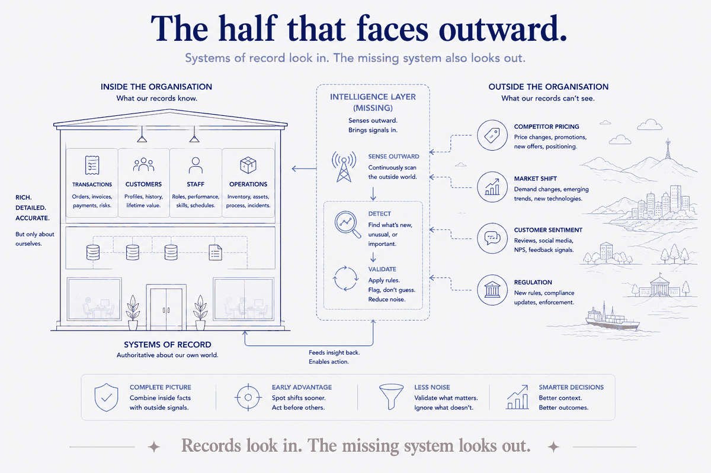

The systems everyone has
Walk into any mid-sized organisation and you can predict the stack. There's a finance system that knows every transaction. A CRM that knows every customer and deal. An HR system that knows every employee. Something operational — a platform, an ERP, a scheduling tool — that runs the actual work. These are good systems, often expensive ones, and they do their job.
But notice what kind of system they all are. In the language the enterprise-software world settled on years ago, they're systems of record: authoritative stores of what happened. A transaction posted. A deal closed. A hire made. They are, by design, backward-looking. They tell you the state of the world as it was recorded, accurately and after the fact.
Here's the analogy I keep coming back to: a system of record is a rear-view mirror. It shows you, accurately and in detail, what's already behind you. You cannot drive safely without it. But if it's the only instrument on your dashboard, you're steering forward by looking backward — and most organisations, for all their expensive systems, are doing exactly that.
On top of records, most places have also bolted on systems of engagement — the portals, dashboards, and apps people use to interact with all that data. Also useful. Also, fundamentally, a window onto the records.
And then the stack stops. There's a third kind of system that's supposed to sit above these — and in most organisations, it's simply absent, or present only as a scatter of disconnected reports. That's the missing one.
The system almost nobody built
The third system has a name too: a system of intelligence. The idea isn't mine — it's been circulating in enterprise architecture for a decade. The standard definition goes roughly: a layer that combines data, analytics, and AI to turn records into insight and drive intelligent action. It reads across the systems of record, finds the signal, and feeds decisions.
That definition is right as far as it goes. My argument is that it doesn't go far enough, and that the gap between the brochure version and a real one is exactly why so few organisations actually have it. A system of intelligence worth the name isn't a BI dashboard with an AI bolted on. It does three things most attempts skip:
1. It detects new insight continuously — not a quarterly report, a standing capability. 2. It validates its own data — it checks itself against rules and flags what's wrong, rather than confidently reporting on numbers nobody trusts. 3. It looks outward — at competitors, at the market, at the signals outside the four walls — not only inward at its own records.
Take any one of those away and you get the thing organisations do have: a pile of dashboards that are out of date, occasionally wrong, and blind to everything happening outside. The reason it's the missing system isn't that nobody's heard of it. It's that the real version is harder than the pitch, and it's built from a pattern most data programmes never assemble.
The pattern: data + AI + rules
Here's the part I can speak to directly, because I've built exactly this — not at enterprise scale first, but at personal scale, which turned out to be the cleaner place to get the pattern right.
The pattern has three parts, and the third is the one everyone forgets.
Data is the foundation: everything integrated into one place, decomposed into stable, well-modelled pieces rather than trapped in the silo that produced it. This is the part organisations understand — it's the data-warehouse, the lakehouse, the "single source of truth" project. Necessary, and not sufficient.
AI is the reader: the layer that traverses that data, connects things across silos, drafts the insight, answers the question, notices the pattern a human wouldn't have queried for. This is the part everyone is excited about right now, and the part everyone is trying to bolt straight onto messy data — which is why it hallucinates and gets quietly distrusted.
Rules are the part almost everyone leaves out, and they're what separate a real system of intelligence from a confident liar. Rules are the validation and plausibility checks that run continuously — at input, in the middle, and at output — and that do one disciplined thing when something doesn't add up: they flag it. They don't guess. A flagged number goes to a human, who resolves it and sharpens the rule. Over time the data gets cleaner and the rules get smarter. That loop — the system checking its own work and keeping a human in the loop — is the difference between a system you can act on and a dashboard you learn to ignore.
Data makes it possible. AI makes it useful. Rules make it trustworthy. Skip the rules and you haven't built a smaller system of intelligence — you've built something worse than none, because it's wrong with confidence.

I know it works because I run it
I didn't arrive at this from a whiteboard. I run this exact pattern on my own knowledge — tens of thousands of structured markdown files, treated as a real data model: atomic, self-describing, integrated. A queryable database sits over the top of it. An AI reads and acts on it. And a layer of validation and plausibility rules continuously checks it — flags the contradiction, the stale figure, the thing that doesn't reconcile — and hands it to me to resolve, which sharpens the rule for next time.
It sounds like a personal-productivity story, but architecturally it is precisely the missing enterprise system, just without the politics and the vendor contracts. Data, integrated and modelled. AI, reading across it. Rules, keeping it honest. The same three parts, the same loop. Getting it working at personal scale did something a slide deck never could: it proved the pattern is real, and it showed me exactly where organisations' versions fall apart — always at the rules, and always at the outward-facing half.
The half that faces outward
Every point so far has been about an organisation looking at itself more intelligently. But the sharpest version of the missing system does something a system of record structurally cannot: it looks outward.
Your records know everything about your own transactions and nothing about your competitor's pricing move, the shift in your market, the sentiment turning in your customers' reviews, the regulation coming down the pipe. That external signal is where most of the strategic risk and opportunity actually lives — and it's the part no ERP will ever hold. A real system of intelligence treats external data as first-class: it ingests competitor and market signals alongside internal records, runs the same detect-and-validate loop over them, and tells you not just "here's what we did" but "here's what's changing around us, and here's what looks off." This is what finally gets you out of the rear-view mirror. Detect and validate turn the records into a windscreen — what's ahead, not just behind; sensing outward adds the side mirrors — what's coming up alongside you. Only with all three do you have an organisational sense of your surroundings, rather than a very precise picture of the road you've already driven.

Why this is a layer, not another silo
One caution, because the wrong reading of this article is "buy another platform." The missing system is not a fourth silo to sit beside finance and CRM. It's a layer that sits on top of the systems you already have and reads across all of them. Its entire value is that it's cross-cutting — it's the only thing in the stack whose job is to connect what the record systems keep separate. Build it as another walled application and you've just added to the problem it was supposed to solve.
That's also why it's hard, and why it's usually missing. It doesn't belong to any one department, so no one department builds it. It requires the data to be modelled well enough to connect, the AI to be trusted enough to rely on, and the rules to be disciplined enough to keep it honest. Most organisations have a piece — a data team here, an AI pilot there, a BI tool somewhere — and never assemble them into the loop that makes the whole thing intelligent.
Start by naming the gap
You can't build what you can't see, and the reason this system stays missing is that it doesn't show up as an absence. Nothing breaks. The dashboards still render. It's a negative space — the insights you never surfaced, the bad data you reported straight-faced, the competitor move you noticed a quarter late. Missing systems are invisible precisely because they're missing.
So the first move is to name it. You have your systems of record, and they're fine. Ask the harder question: do you have the system that reads across all of them, detects what's changing, checks its own data against rules, and watches the world outside? If the honest answer is "we have some dashboards," then the layer isn't built — and now at least you know what's missing. Data, AI, and rules, assembled into a system that keeps itself honest. That's the one almost nobody has. It's also the one that, once you've seen it work, you can't unsee the absence of.